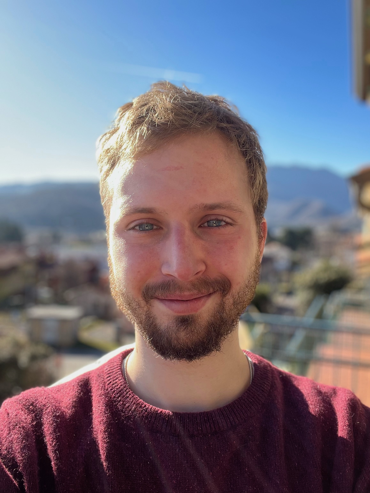

I am a postdoctoral researcher at the
Universidade Federal do Rio de Janeiro
working in the area of
dynamical systems and ergodic theory.
A full CV can be found
here
and
links to my publications and preprints can be found
here.
